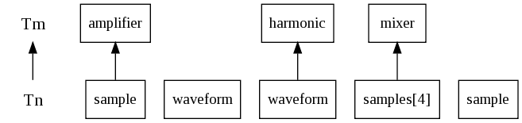
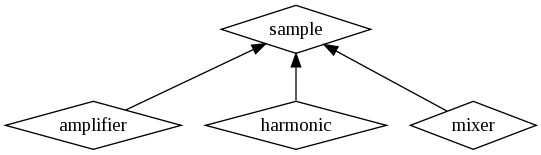

| Application version | beta03 |
| Trad4 version | 3.1.3 |
| Document version | beta04 |
| Author | schevans |
| Date | 04-06-2010 |
This application is a concurrent additive synthesiser. The principal of additive synthesis is that any periodic waveform can be synthesised by adding together sine waves. There's a good introduction to additive synthesis here.
This is a simplified model using no phase shifting and therefore only sinusoidal components. ADSR envelopes are not implemented.
In this beta six presets are available: sine, pulse, sawtooth, square, triangle and Hammond.
This model has an inverse - fourier_transform. Once you've read through this you should take a look at that.
The model itself is made up of three or more tiers. On the first tier are the harmonics - the pure sine wave feedstock of our synthesiser. Next come one or more tiers of mixers, where the harmonics are added concurrently. On the last tier there is only an amplifier, which serves to normalise the output as appropriate.
The concurrency comes from the fact that each mixer subscribes to a sub-set of harmonics - in all the configurations presented here there are four harmonics per mixer - and the mixers in turn run concurrently. This model uses the Inheritance of Interface (IoI) feature of trad4 where a mixer can subscribe to a set number of harmonics or a set number of mixers, as both types isa sample.
The number of samples per mixer is an optimisation parameter - the fewer samples per mixer you have the more concurrency you get but you also get more tiers. Optimisation of this application is beyond the scope of this document (though highly suitable for analysis as the app involves simple operations on large slabs of RAM which have to get dragged across buses). The concrete diagram below shows 2 samples per mixer for brevity. The application as configured in the distribution uses 4.
A new feature in trad4v3.1.2 is that the abstract and concrete graphs can now be generated for you, the first examples of which are below.

This application uses inheritance of interface (IoI), so it's abstract graph looks a little strange. Each type is considered separately and the tier axis on the left is relative. So that, from right to left, an amplifier of tier m subscribes to a sample of tier n, where m>n. A harmonic can exist on any tier and subscribes to nothing. A mixer subscribes to an array of in this case 4 samples. A sample as our base type does nothing at all.

A generated inheritance diagram has been added which should clarify the situation.
Amplifier, harmonic and mixer all inherit their interface (i.e. pub section) from sample. This means, looking at the abstract diagram, an amplifier could subscribe to a harmonic, or a mixer, or indeed another amplifier, as all three present the same pub interface. Likewise a mixer could subscribe to an array of harmonics, mixers or amplifiers for the same reason.
The concrete graph should look more familiar. This shows a graph where NUM_HARMONICS=8 and NUM_HARMONICS_PER_MIXER=2.
From this you can see that in practice, mixers subscribe to harmonics or other mixers. Only one amplifier is used and is only subscribes to a mixer.
The naming convention for the files below is as follows: name+frequency+num_harmonics. So "square_f1_h1024.wav" is a square wave with frequency 1Hz, synthesised using 1024 harmonics. Likewise "hammond_f261_h16.wav" is the Hammond preset with frequency 262Hz (middle C), synthesised using 16 harmonics. Be aware that only the Hammond wave is at an audible frequency.
The sine wave is the simplest waveform, comprising simply of a single sine wave of the base frequency. As such, there is no difference between the 16- and 1024-harmonic versions, so only the 16-harmonic is shown here.

This is given by:
if ( id == 1 )
level = 1.0;
else
level = 0.0;
The pulse waveform comprises of an equal amount of each harmonic.

This is given by:
level = 1.0;
The sawtooth waveform has a geometric drop-off of the amplitude of the component harmonics.
Using 16 harmonics:

Using 64 harmonics:

This is given by:
level = 1.0 / id;
The square waveform has a geometric drop-off of the amplitude of the odd component harmonics.
Using 16 harmonics:

Using 1024 harmonics:

This is given by:
if ( id % 2 != 0 ) // Is odd id
level = 1.0 / id;
else // Is even id
level = 0.0;
The square waveform has an exponential drop-off of the amplitude, where every second active harmonic amplitude is negative.
Using 16 harmonics:

Using 1024 harmonics:

This is given by:
if ( id % 2 != 0 ) // Is odd id
level = pow( -1.0, ( id - 1 ) / 2 ) * ( 1.0 / (id*id) );
else // Is even id
level = 0.0;
This is a basic model of a Hammond tonewheel organ.
The classic Hammond organ has nine drawbars, each controlling the amplitude of a subset of harmonics. The drawbar amplitudes are labeled from 0 to 8, so it's characteristic to discuss the various arrangements or 'presets' as '800000000' for just a sine wave of the fundamental frequency or '88888888' - all the drawbars fully open.
More detailed information may be found here
As these files are at an audible frequency they are best downloaded and viewed using a sound editor such as Audacity.
To run the application:
1) Download and unpack the distribution
2) cd into trad4_v3_1_2/additive_synth:
3) Source additive_synth.conf:$ cd trad4_v3_1_1/additive_synth
4) Start additive_synth:additive_synth$ . ./additive_synth.conf
additive_synth$ additive_synth
To increase or decrease the number of threads used (the default is 4), set NUM_THREADS and re-start the application:
$ export NUM_THREADS=64 $ additive_synth
To load a different waveform to be generated or to change the base frequency, use the load_waveform command, with the two arguments being the waveform.csv file and the fundamental frequency of the sample you want generated. E.g (261.626Hz is middle C):
additive_synth$ load_waveform.pl input/sine.csv 261.626
This can be done while additive_synth is running. If it isn't running the database will still be updated for the next time it's started but an error message will be produced as the application is running to be informed.
NOTE: If you try and model very high frequencies using the 44100Hz sample rate and many harmonics you may run up against the Nyquist frequency cutoff. The Nyquist frequency is the highest frequency a particular sample rate can support. If this happens, you will see a warning that these higher frequencies are being ignored.
To add a new waveform, set up a new input.csv file and place it in additive_synth/input. It should have the format "id,amplitude" e.g. (for sine):
1,1.0 2,0.0 3.0.0 ...
See the existing files in this directory for examples.
The default configuration of the distribution is with NUM_HARMONICS_PER_MIXER=4 and NUM_HARMONICS=16. If you want to increase the number of harmonics, you do so as follows:
First, edit src/constants.t4s as appropriate and save. The two values must be set do that NUM_HARMONICS is equal to NUM_HARMONICS_PER_MIXER raised to an integer power, where that integer power specifies the number of tiers of mixers you'll have, so that:
If NUM_HARMONICS_PER_MIXER=4 pow=2 gives NUM_HARMONICS=16 so that T3: 1 mixer T2: 4 mixers T1: 16 harmonics pow=3 gives NUM_HARMONICS=64 so that T4: 1 mixer T3: 4 mixers T2: 16 mixers T1: 64 harmonics If NUM_HARMONICS_PER_MIXER=8 pow=2 gives NUM_HARMONICS=64 so that T3: 1 mixer T2: 8 mixers T1: 64 harmonics pow=3 gives NUM_HARMONICS=512 so that T4: 1 mixer T3: 8 mixers T2: 64 mixers T1: 512 harmonics
There's a performance trade-off with NUM_HARMONICS_PER_MIXER where the fewer mixers you have to sum you'll get more concurrency, but more objects to run. The optimal setting will depend on your hardware and the size of the samples you are using. This discussion is beyond the scope of this document but would make in interesting study.
Next, run the precompiler and compile as normal. There's some flakiness in the makefiles when adjusting just the constants so you should do a clean build (-a for t4p):
additive_synth$ t4p -a additive_synth$ make clean additive_synth$ make
The generated data is keyed off the constants, so it will need regenerating and and the database will need recreating and reloading. The default location of the generated data is data/worked_example. This is done as follows:
additive_synth/data$ generate_data.pl additive_synth/data$ recreate_db.sh additive_synth/data$ reload_db.sh worked_example
additive_synth$ additive_synth